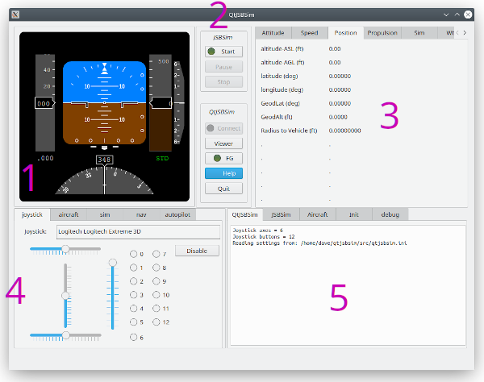

< Home
Overview

1.
This is the PFD (Primary Flight Display). It is designed to represent a typical modern PFD. On the left is the speed tape, which displays the airspeed in knots. Just below the speed tape is the Mach number display. In the center is the AI (Attitude Indicator). The flight director bars are not yet supported in QtJSBSim. To the right of the AI is the altitude tape, which displays altitude in feet (MSL). At far right is the vertical speed indicator, which displays vertical speed in 1000's of feet per minute. Below the altitude tape is the altimeter barometric pressure setting (this is not yet supported in QtJSBSim and always displays standard pressure). At the bottom of the PFD is a compass display which displays magnetic heading. At bottom-left is a display of ILS identifier and distance (DME), active only when the ILS is selected on.
2.
These are the controls for JSBSim and QtJSBSim.
- JSBSim
- The Start button launches JSBSim as a separate process.
- The Pause/Resume button pauses and unpauses JSBSim.
- The Stop button sends a "terminate" signal to the JSBSim process via a UDP socket.
- QtJSBSim
- The Connect button opens/closes socket connections between JSBSim and QtJSBSim.
- The Viewer button opens the Cesium viewer.
- The FG button opens/closes an outbound socket connection to FlightGear.
- The Help button opens this help dialog.
- The Quit button closes QtJSBSim.
3.
This is the JSBSim output section. It displays data which has been sent from JSBSim via a UDP socket. The output is grouped on several tabs. Note : the "UI frame rate" comes from QtJSBSim, not JSBSim.
4.
This is the aircraft controls section. There are five tabs:
- joystick - Shows the joystick name string and the control inputs.
- aircraft - Provides means to control aircraft configuration.
- sim - Provides means to control the simulation environment.
- nav - Provides some PFD and navigation controls.
- autopilot - is not yet implemented.
5.
This is the console/files section. It displays information on five tabs:
- QtJSBSim - Displays useful information from QtJSBSim on its initialization and on the progress of the simulation session.
- JSBSim - JSBSim's console output is echoed here.
- Aircraft - The aircraft XML configuration file used by JSBSim.
- Init - The initialization XML file used by JSBSim.
- debug - A place to display debugging information.